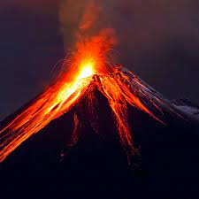

A volcano is a rupture in the crust of a planetary-mass object, such as Earth, that allows hot lava, volcanic ash, and gases to escape from a magma chamber below the surface.
On Earth, volcanoes are most often found where tectonic plates are diverging or converging, and most are found underwater. For example, a mid-oceanic ridge, such as the Mid-Atlantic Ridge, has volcanoes caused by divergent tectonic plates whereas the Pacific Ring of Fire has volcanoes caused by convergent tectonic plates. Volcanoes can also form where there is stretching and thinning of the crust's plates, such as in the East African Rift and the Wells Gray-Clearwater volcanic field and Rio Grande Rift in North America. Volcanism away from plate boundaries has been postulated to arise from upwelling diapirs from the core–mantle boundary, 3,000 kilometers (1,900 mi) deep in the Earth. This results in hotspot volcanism, of which the Hawaiian hotspot is an example. Volcanoes are usually not created where two tectonic plates slide past one another.
According to the theory of plate tectonics, the Earth's lithosphere, its rigid outer shell, is broken into sixteen larger plates and several smaller plates. These are in slow motion, due to convection in the underlying ductile mantle, and most volcanic activity on Earth takes place along plate boundaries, where plates are converging (and lithosphere is being destroyed) or are diverging (and new lithosphere is being created.)[3]
Main article: Divergent boundary At the mid-oceanic ridges, two tectonic plates diverge from one another as hot mantle rock creeps upwards beneath the thinned oceanic crust. The decrease of pressure in the rising mantle rock leads to adiabatic expansion and the partial melting of the rock, causing volcanism and creating new oceanic crust. Most divergent plate boundaries are at the bottom of the oceans, and so most volcanic activity on the Earth is submarine, forming new seafloor. Black smokers (also known as deep sea vents) are evidence of this kind of volcanic activity. Where the mid-oceanic ridge is above sea level, volcanic islands are formed, such as Iceland.[4]

Main article: Convergent boundary Subduction zones are places where two plates, usually an oceanic plate and a continental plate, collide. The oceanic plate subducts (dives beneath the continental plate), forming a deep ocean trench just offshore. In a process called flux melting, water released from the subducting plate lowers the melting temperature of the overlying mantle wedge, thus creating magma. This magma tends to be extremely viscous because of its high silica content, so it often does not reach the surface but cools and solidifies at depth. When it does reach the surface, however, a volcano is formed. Thus subduction zones are bordered by chains of volcanoes called volcanic arcs. Typical examples are the volcanoes in the Pacific Ring of Fire, such as the Cascade Volcanoes or the Japanese Archipelago, or the Sunda Arc of Indonesia.[5]
Main article: Hotspot (geology) Hotspots are volcanic areas thought to be formed by mantle plumes, which are hypothesized to be columns of hot material rising from the core-mantle boundary. As with mid-ocean ridges, the rising mantle rock experiences decompression melting which generates large volumes of magma. Because tectonic plates move across mantle plumes, each volcano becomes inactive as it drifts off the plume, and new volcanoes are created where the plate advances over the plume. The Hawaiian Islands are thought to have been formed in such a manner, as has the Snake River Plain, with the Yellowstone Caldera being the part of the North American plate currently above the Yellowstone hotspot.[6] However, the mantle plume hypothesis has been questioned.[7]
Main article: Rift Sustained upwelling of hot mantle rock can develop under the interior of a continent and lead to rifting. Early stages of rifting are characterized by flood basalts and may progress to the point where a tectonic plate is completely split.[8][9] A divergent plate boundary then develops between the two halves of the split plate. However, rifting often fails to completely split the continental lithosphere (such as in an aulacogen), and failed rifts are characterized by volcanoes that erupt unusual alkali lava or carbonatites. Examples include the volcanoes of the East African Rift.[10]